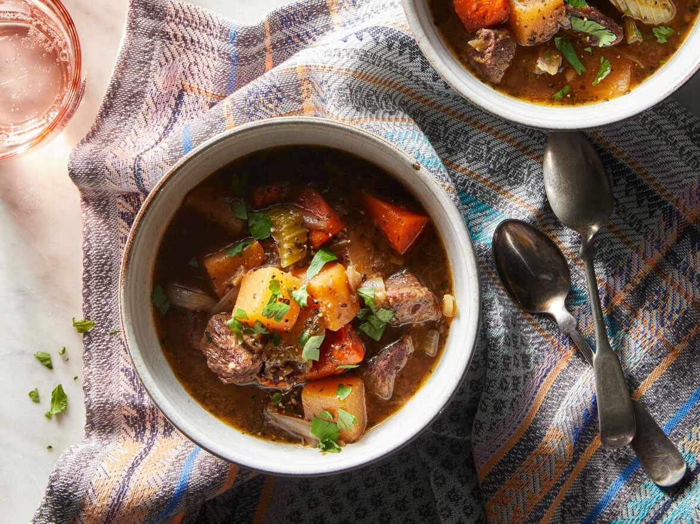

Rutabaga Beef Stew
Rutabagas and beef chuck roast make this stew a hearty and comforting main dish any night of the week.

If you're looking for a scrumptious and mouth-watering beef stew, then look no further. This Rutabaga beef stew is the perfect dish that offers the best experience you could ever ask for. And for sure, it will keep you full and happy — so be prepared to make the tasty recipe again and again.
Ingredients
- 1 pound boneless beef chuck roast, trimmed
- 2 tablespoons all-purpose flour
- ½ teaspoon salt
- ½ teaspoon ground black pepper
- 2 tablespoons vegetable oil
- ½ cup dry red wine (Optional)
- 3 cups low-sodium beef broth
- 2 cups cubed rutabaga
- 1 medium onion, cut into thin wedges
- 4 carrots, cut diagonally into 1-inch pieces
- ½ cup thinly sliced celery
- 4 cloves garlic, minced
- 2 bay leaves
- 2 teaspoons herbs de Provence
Step-by-Step
- Cut beef chuck roast into 3/4-inch pieces. Toss together beef, flour, and 1/4 teaspoon each salt and pepper in a bowl until coated. Heat oil in a large pot over medium-high heat. Add meat and cook until browned, about 5 minutes.
- Add red wine (if using) to pot and simmer until alcohol evaporates, 3 to 4 minutes. Stir in broth, rutabaga, onion, carrots, celery, garlic, bay leaves, herbs de Provence, and remaining salt and pepper. Bring to a boil. Reduce heat and simmer, covered, until meat and vegetables are tender, 30 to 40 minutes. Discard bay leaves.